Frequently asked questions
Payments (most common)
Was load X paid to the carrier or to their factoring company?
How do I check whether a carrier or vendor has been paid?
How can carriers or factors check payment status themselves?
How do I get paid my own margin?
Loads not showing in the portal
My loads aren't showing / I can't access my loads.
A load shows "no buyer" or won't pull up the customer.
Login, OTP, and users
How do I reset my password or handle the OTP login?
How do I add a user or trusted contact?
Fees, the formula, reserves, and chargebacks
What is the formula for my payout?
What does quick pay cost?
How do reserves and reserve release work?
What is the 75 Day Reserve Notice?
What happens if my customer never pays?
Carrier onboarding
The carrier says the onboarding link didn't work or they didn't get it.
What is the difference between full Carrier Onboarding and the Vendor Pay Link?
Customers, credit, and holds
Why is the Credit App button disabled?
My customer came back Pending.
How do I get a customer above $30,000?
My submission shows "on hold."
NOAs and switching factors
A carrier I pay switched factoring companies.
The carrier pay-terms warning popped up at submission.
Fraud and compliance
What types of fraud should I watch for?
How do I prevent customer (shipper) fraud?
How do I prevent carrier fraud?
Cargo claims and broker liability (Carmack Amendment)
What is the Carmack Amendment?
What are my responsibilities under Carmack?
A carrier damaged freight or there is a loss. What do I do?
I found out after the fact that my load was double-brokered. What now?
General
I can't see a feature others have.
What is factoring?
Who do I contact?
No matches. Try fewer or different words, or browse the guides below.
Guides
1Quick Start
Welcome to the OperFi Broker Portal. This is where you run a load from start to finish: get a customer credit-approved, book the load, send paperwork to your carrier, and submit the load to us for factoring. This page is the five-minute version. Each step links to a full guide.
The path, start to finish:
- Log in. Use the link OperFi provided. Your dashboard opens with a snapshot of your activity.
- Get your customer credit-approved. Go to New Credit Check and submit the customer (shipper) you want to bill. We review credit and you'll see the decision under Customer Approvals. You can only factor loads for an approved customer, so do this first.
- Onboard your carrier (if they're new). Send them an onboarding link so they appear in your carrier list.
- Get the load submitted for factoring. Two ways, and most brokers use the first:
- Submit Load wizard (Path A): if you booked the load elsewhere, go to Invoice Submission > Load Details and walk the three steps, Customer, Carrier, Review & Submit, attaching paperwork as you go.
- OperFi TMS (Path B): if you run loads in OperFi, book and move the load in TMS > Load Board, then submit once it's Ready to Submit.
- We fund it. The load goes straight into our funding queue. No re-keying, no separate handoff.
Then track it. Watch the load under Submission History, see open balances under AR Aging, review margin under Loads & Margin, and check carrier pay under Vendor Payments.
A few ground rules that save time: - A customer must be Approved before it shows up when you book a load. - A carrier must be onboarded with OperFi before it appears in your carrier list. - You can't submit a load for factoring until it's Ready to Submit: delivered, a carrier assigned, the POD on file, and the carrier's invoice on file.
One rule that prevents the most expensive mistake: always get a customer credit-approved before you run their loads. Booking a stack of loads first and submitting later risks a denial after your carriers already need to be paid. Approvals can also change day to day.
2Get a Customer Credit-Approved
Before you can book and factor a load, the customer you are billing (the shipper) has to be credit-approved by OperFi. This is always the first step with a new customer.
Step 1 — Open New Credit Check
From the dashboard, go to New Credit Check.
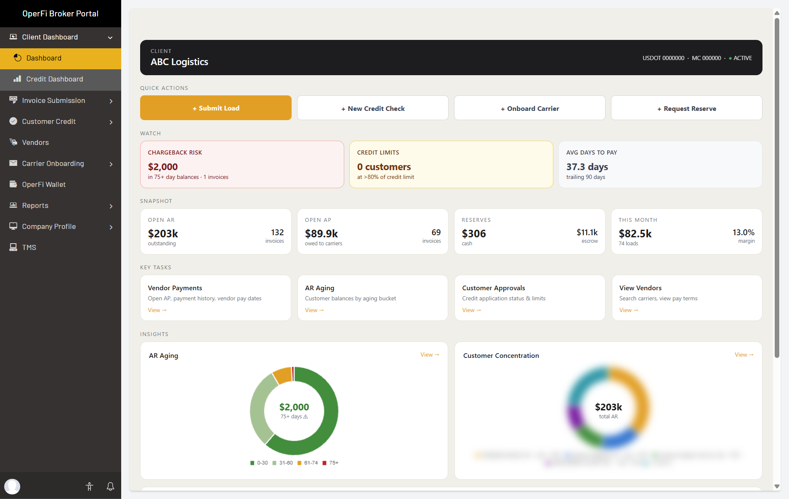
Step 2 — Enter the customer
Fill in the customer's company name, address, and phone, plus their website or LinkedIn if you have it. Use the corporate headquarters address and be precise, so credit does not look up the wrong company. Add the billing contact if you have it.
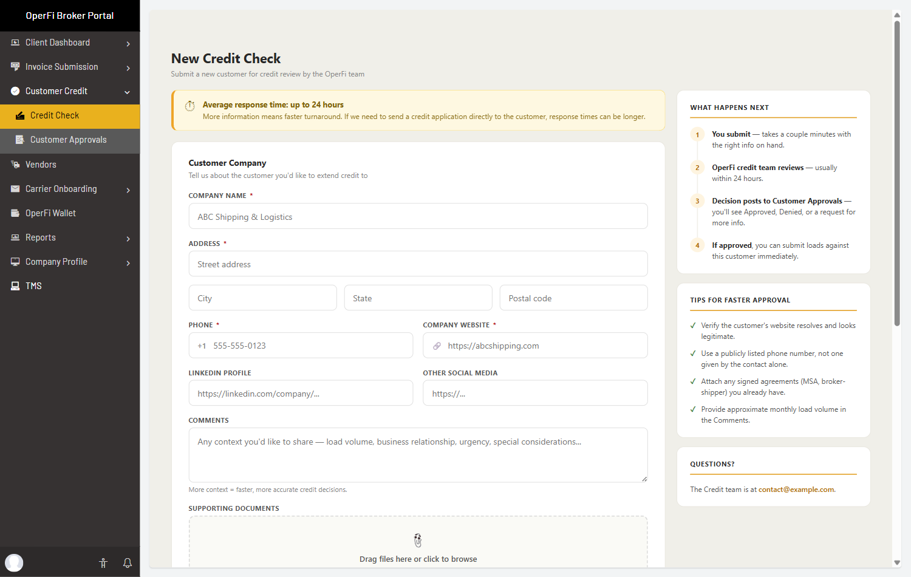
Step 3 — Submit
Submit the request. It goes to our credit team for review. Our primary source is Ansonia Credit Data. You do not need to do anything else.
Step 4 — Watch for the decision
Open Customer Approvals to see status. A customer moves from pending to one of:
- Approved with a credit limit. You can now book and factor loads for them.
- Credit Boost Requested when more limit has been asked for. These customers are still bookable.
- Pending, usually meaning credit could not confidently identify the company or there was not enough data.
- Declined, with a reason where we can share one.
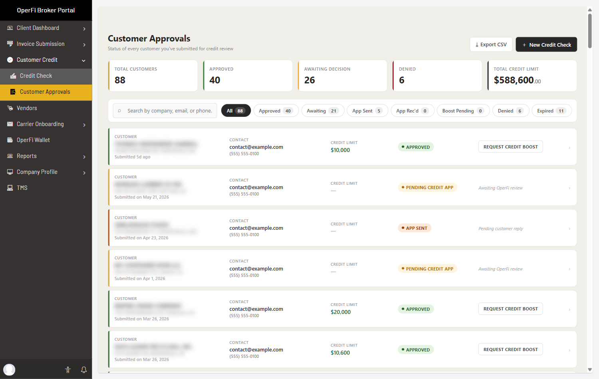
Credit limits and what a check costs
Initial customer approvals run anywhere from $5,000 to $30,000, depending on how much credit data is available. Credit checks at or below a $30,000 approval are free.
To go higher, you can purchase a Credit Boost: $25 to try for up to $50,000, or $50 for $100,000 or more. The fee covers the underwriting, due diligence, and paid reports we run, so paying for a boost does not guarantee an approval.
Live credit availability when you book
Once a customer is approved, the portal shows their live credit availability as you book a load. Pick the customer in the Submit Load wizard (or in TMS) and you will see how much of their limit is used and how much remains, with a warning when they are near or over the limit. You can still book; we review over-limit loads on our side.
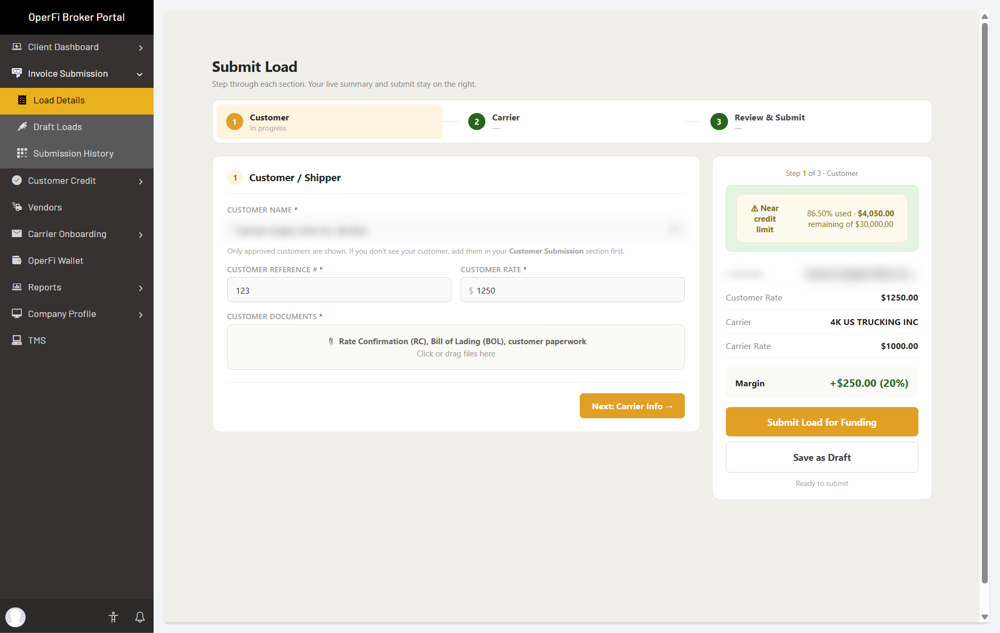
When a customer comes back Pending
Pending usually means credit cannot confidently identify the company or there is not enough data. Open the customer and use send a credit application. The customer gets an emailed link, completes one-time-password (OTP) email verification, and lists three trade references plus one bank reference, which the system emails for verification. The application also carries basic broker-shipper / MSA-type terms.
Master Service Agreements (MSAs)
MSAs are encouraged at any credit limit. A broker is most protected with a customer when an MSA is in place. There is no fixed dollar trigger, since customers are case by case, but if your volume with a customer is over about $50,000 we will ask about it, and to take credit over $100,000 we will most likely require one. MSA, broker-shipper, and co-broker templates are under Company Profile > Resources & FAQ.
Step 5 — Keep billing details current
You can edit a submitted customer's billing contact (name, phone, email) from Customer Approvals before funding. Open the customer and use Edit Billing Info.
Common questions
- How long does approval take? It varies by customer. Check Customer Approvals; you do not need to call.
- My customer was declined. Now what? Reach out to us. Some declines are about missing information rather than credit itself.
3Booking and Submitting Loads
There are two ways to work loads in the portal. Pick the one that matches how you operate. Most brokers use Path A.
- Path A: Submit a Load for Factoring. You manage loads in your own TMS (or by hand) and use OperFi just to send the paperwork and get funded. A quick three-step wizard.
- Path B: Manage Loads in OperFi TMS. You run the whole load lifecycle inside OperFi, from booking a carrier through delivery, then submit for factoring without re-keying.
Both end the same way: the load lands in OperFi's funding queue. Documents (Section 5) and tracking (Section 6) apply to both.
Path A — Submit a Load for Factoring (most brokers)
Use this when a load is booked and delivered and you just need to send us the paperwork for funding. Go to Invoice Submission > Load Details. It is a three-step wizard with your live summary and the submit button on the right.
Before you start
- The customer you are billing is credit-approved (Section 2).
- You have the customer paperwork (rate confirmation, BOL/POD) and the carrier's invoice ready to upload.
Step 1 — Customer / Shipper
- Customer Name. Pick the shipper from the dropdown. Only approved customers appear; if yours is missing, submit it under New Credit Check first.
- Customer Reference # and Customer Rate (what you bill the shipper).
- Customer Documents. Drag in the Rate Confirmation, BOL, and any customer paperwork.
- Click Next: Carrier Info.
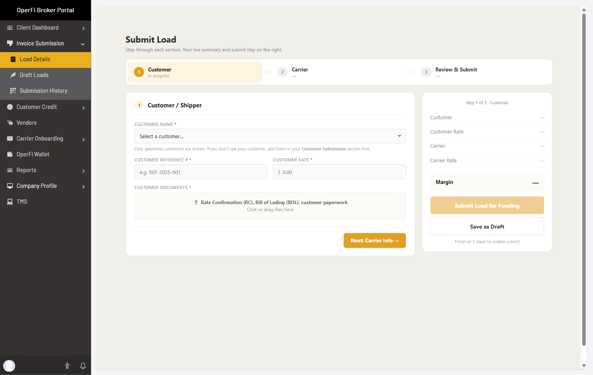
Step 2 — Carrier
- Select the carrier that hauled the load and enter the carrier rate (what you pay them). Your margin updates live in the summary on the right.
- Upload the carrier documents (their invoice and paperwork). Customer and carrier documents stay separated automatically.
- Continue to Review & Submit.
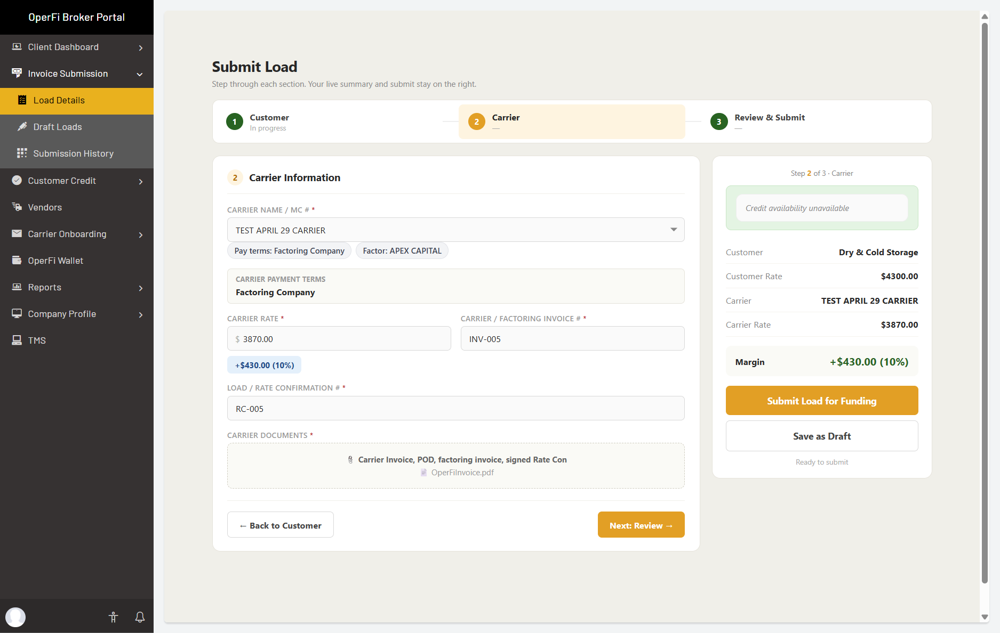
Step 3 — Review & Submit
- The right-hand summary shows Customer, Customer Rate, Carrier, Carrier Rate, and Margin. Confirm it is right.
- Click Submit Load for Funding. The load goes into OperFi's funding queue and we take it from there.
- Not ready? Save as Draft at any point. Submit only enables once all three steps are complete.
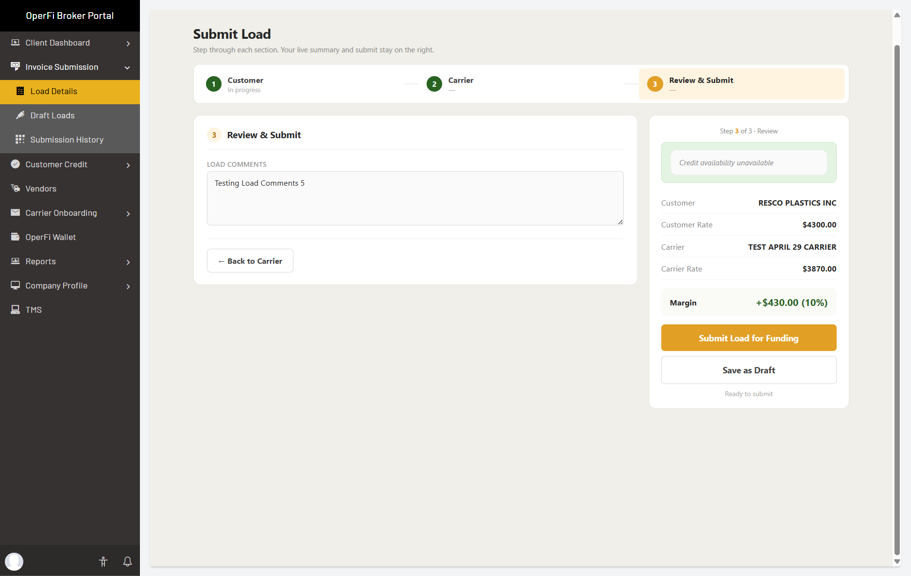
Common questions
- My customer isn't in the dropdown. It isn't credit-approved yet.
- Submit is disabled. You haven't finished all three steps. The right panel shows what is still missing.
- Where did it go after I submitted? To Submission History as Processing. Track balances under AR Aging and carrier pay under Vendor Payments.
Path B — Manage Loads in OperFi TMS (full load management)
Use this to run loads end to end inside OperFi: book a carrier, move the load through delivery, generate paperwork, and submit for factoring without leaving the portal. Go to TMS > Load Board.
The board shows your loads with Load, Status, Customer, Lane, Carrier, Invoice, and Margin, plus totals for Active Loads, Total Invoice, Total Margin, and Ready to Submit. Filter by status across the lifecycle: Draft, Available, Covered, Dispatched, In Transit, Delivered, POD Received, Ready to Submit, Submitted, Cancelled.
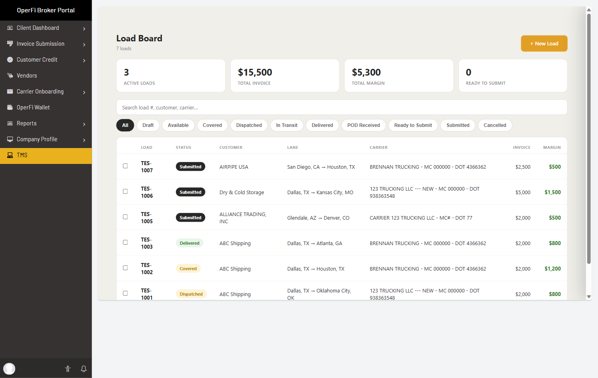
Step 1 — Create the load
Click + New Load. Pick your approved customer, enter the customer rate and the lane (origin and destination, with address autocomplete and multi-stop support), and set equipment, weight, and reference numbers. A new load starts in Draft.
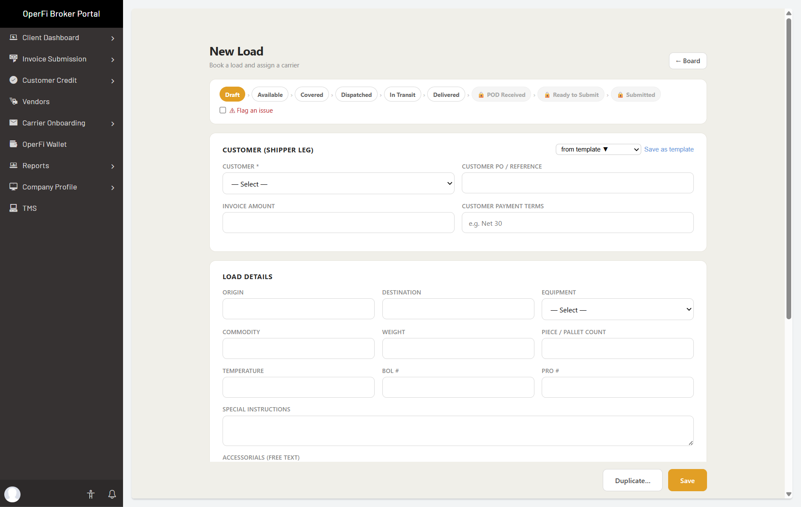
Step 2 — Assign a carrier
Open the Carrier dropdown and select the carrier. The portal shows its pay terms, factoring company if any, and whether a NOA/LOR is on file, and warns you if the carrier is flagged Do Not Use. Leave it blank and Save as Draft while you find a truck; assign a carrier to move it into the active lifecycle.
Step 3 — Send paperwork and move the load
From the load's Documents section, generate and send the Rate Confirmation (and Customer PO, Invoice, or BOL). Use Get Upload Link or Email to Carrier so the carrier returns the BOL, POD, and their invoice with no login. Update status as the load moves: Covered, Dispatched, In Transit, Delivered. Documents auto-advance status: the POD moves it to POD Received, and the carrier's invoice makes it Ready to Submit.
Put your own NOA email address in the rate confirmation's special instructions. OperFi does not provide a broker-specific NOA address; set up your own and include it on rate cons and carrier setup documents.
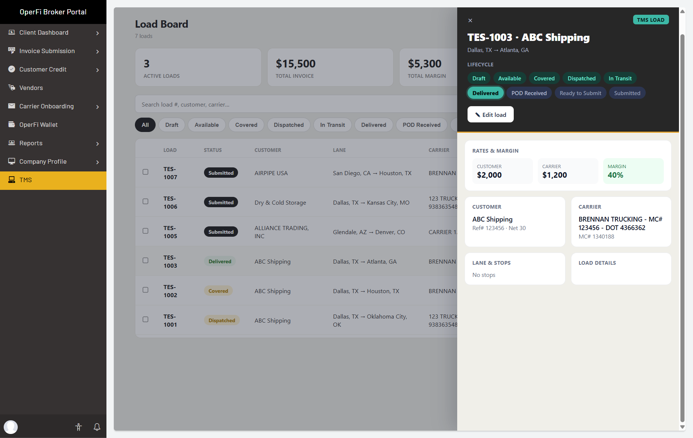
Step 4 — Submit for factoring
When the load is Ready to Submit, open the Submit for Factoring panel. It checks that a carrier is assigned, the POD is on file, the carrier's invoice is on file, and the status is Ready to Submit. When the checklist clears, Submit for Factoring turns amber. Click it and the load locks as Submitted in the funding queue.
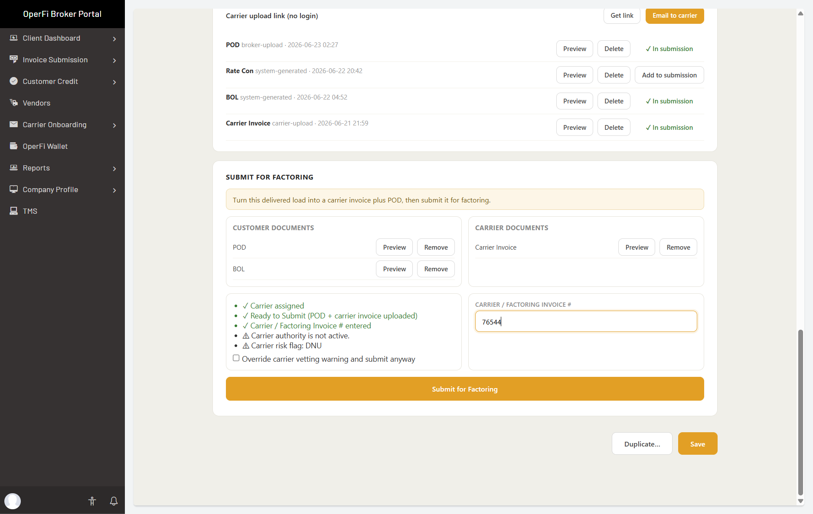
Bulk import: Draft Loads from a CSV
If you run a lot of loads, you do not have to enter them one at a time. Under Invoice Submission > Draft Loads you can Import CSV to bring in many loads at once.
- Click Import CSV and download the template if you need it, then choose your file (a TMS export works).
- The portal matches your customers and carriers and shows a preview with each row's status before anything is created. Review it, then Create drafts.
- Your imported loads land as drafts. Resolve anything that needs attention (a missing customer match, missing documents), then Submit all Ready in bulk when they are good to go.
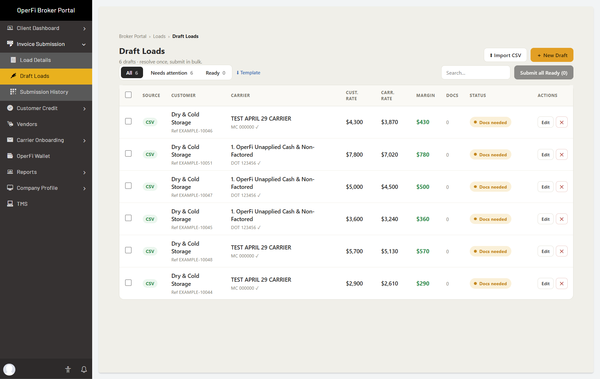
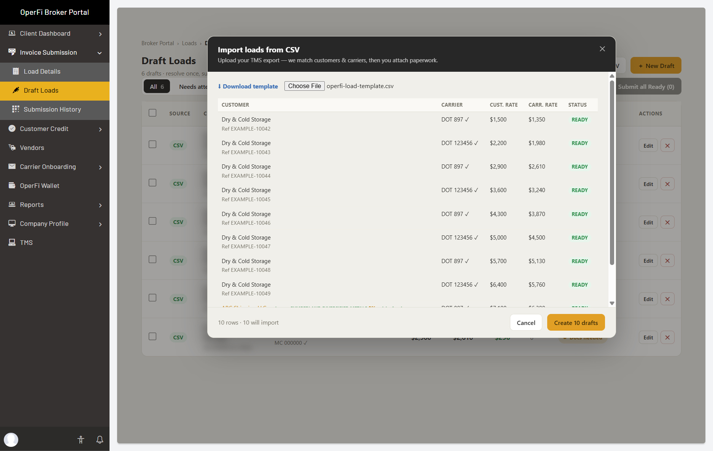
Common questions
- My carrier isn't in the dropdown. They aren't onboarded under your account yet (Section 4).
- The carrier fell off. Clear or change the carrier; clearing returns the load to Draft and voids any rate con sent to the old carrier.
- I need to cancel a load. Any load not yet delivered can be cancelled and later restored.
- My import shows rows that need attention. That usually means a customer or carrier could not be auto-matched. Fix it on the draft, then submit.
4Onboard a Carrier
A carrier has to be set up under your account before it appears in your carrier list and you can book it. The portal lets you look the carrier up and send them an onboarding link. Carrier onboarding is free for OperFi clients.
Full Carrier Onboarding vs the Vendor Pay Link
Both live under Carrier Onboarding and run the same intake and fraud checks.
- Full Carrier Onboarding generates your broker-carrier agreement, sends the insurance company a certificate-holder notice (so you are notified of insurance changes), builds the full carrier profile, manages NOAs, and sends a factor notification.
- Vendor Pay Link does the same intake but does not generate a broker-carrier agreement or a certificate-holder notice. It still sends the factor notification. Use it if you already handle agreements through RMIS or MyCarrierPackets.
Step 1 — Look up the carrier
Go to Carrier Onboarding. Search by DOT or MC number. The portal pulls the carrier's details so you are not typing them by hand.
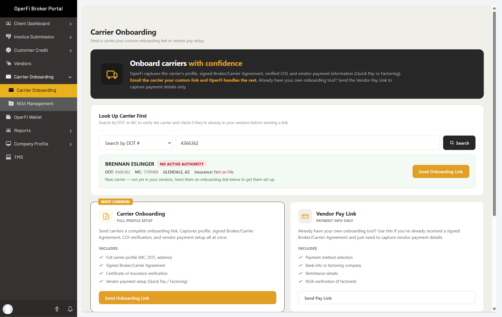
Step 2 — Send the onboarding link
Send the carrier the onboarding link. The recipient email is locked to the carrier's verified FMCSA email as a fraud safeguard; you can add an additional recipient if you need to. The carrier receives an email noting that you are partnering with OperFi to handle carrier payments, with a link to complete their profile, provide insurance, and review and sign your broker-carrier agreement.
Do not fill the form out for the carrier. The carrier must complete it themselves so our IP, VOIP, and bank fraud checks run on the real signer. You are CC'd on the same email, so if the carrier says they never received it, you can forward your copy.
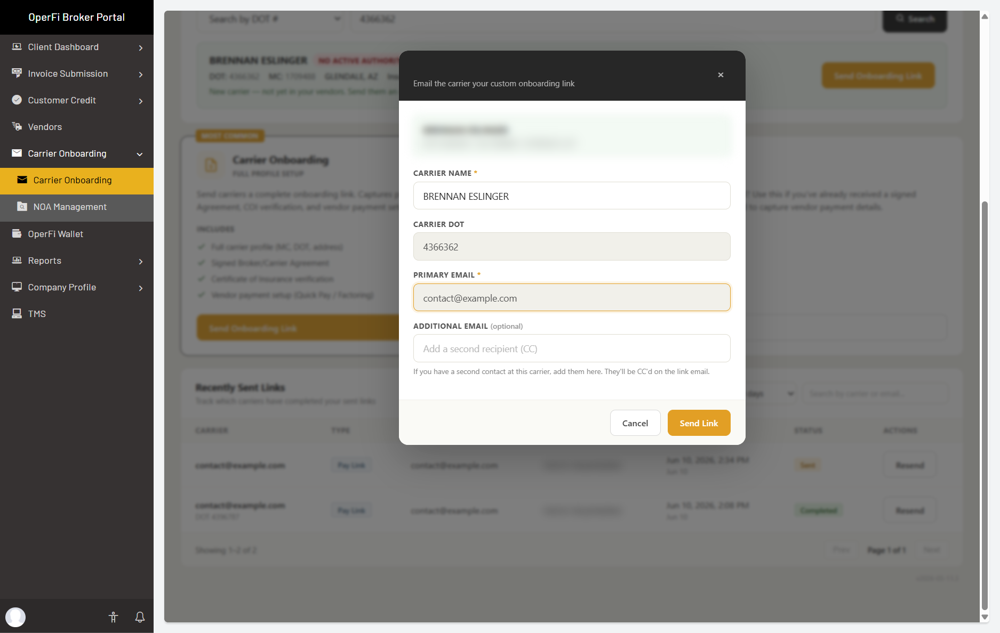
Step 3 — Track status under Recently Sent Links
The list shows each link as:
- Sent when the link has gone out but the carrier has not completed setup.
- Completed (green) once the carrier finishes and a vendor record exists under your account.
If a carrier has not acted, use Resend. Repeat sends are labeled so you can see "sent 2x." A carrier is not purchasable until their NOA is confirmed (the link moves past Sent).
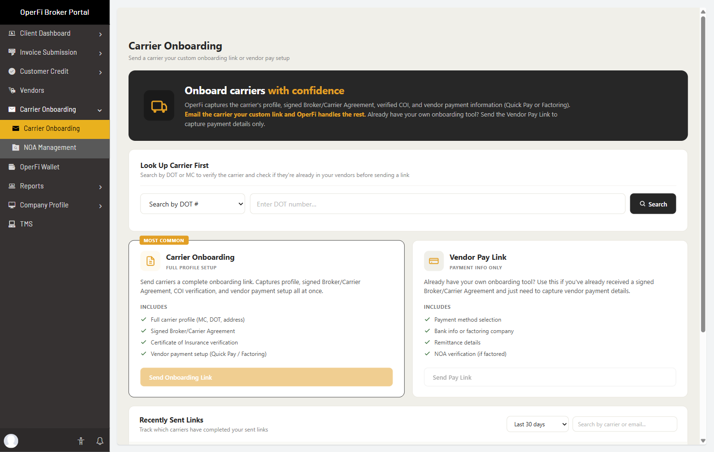
Carriers that use a factoring company (NOA)
If a carrier factors, they upload their NOA during onboarding and we track and lock that relationship, then send the factor a notification. Loads are not purchased until the NOA is confirmed. Watch for a mismatch: a carrier may say "quick pay" but submit an invoice that carries an NOA. The portal flags this at submission, and you upload the NOA to the NOA Management tool to lock the correct factor so the right party is paid.
Check a carrier's risk profile
Open a carrier from Vendors to see its Carrier Risk Profile. We pull live data from CarrierOK, FMCSA, IPQS, FedACH, and the OperFi network into a single system recommendation (for example, Hold or Proceed) with the specific flags behind it: out-of-service alerts, IPQS fraud score, shared phones, severe violations, authority age, and insurance status. Use it alongside your own underwriting before you book, and document your decision right from the profile.
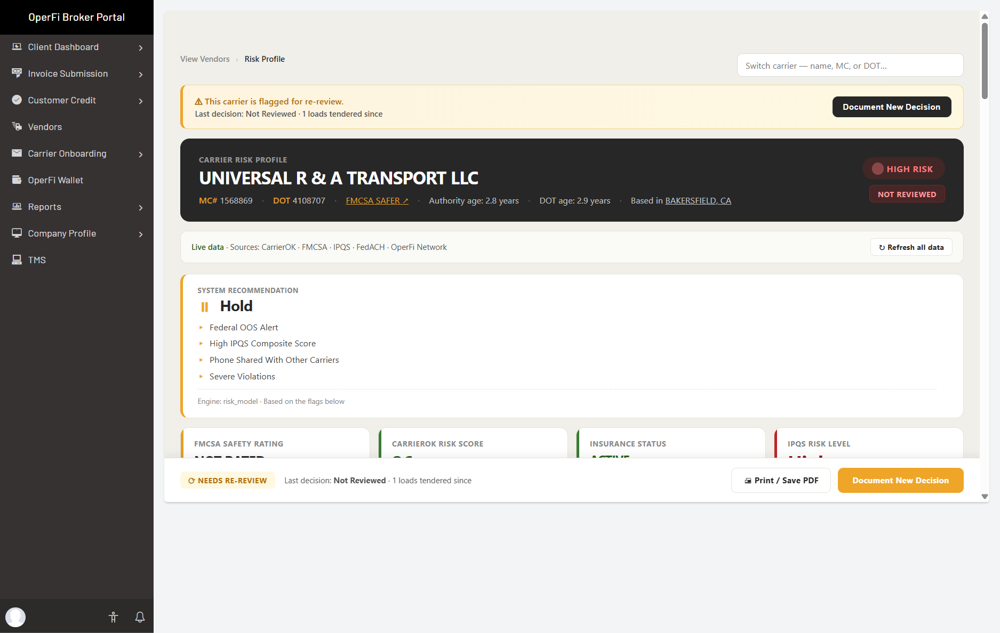
Common questions
- The carrier says they never got it. Resend the link from Recently Sent Links, and forward your CC'd copy. Confirm the FMCSA email on file is one they actually monitor; add a second recipient if needed.
- A carrier shows Do Not Use. That is our risk flag, often sent as a "carrier added to OperFi's Do Not Use list" email after signup. Take it seriously and check with us before booking.
5Collect Documents (Rate Con, BOL, POD)
Every load you factor needs paperwork on both sides: a customer-side document (the POD) and a carrier-side document (the carrier's invoice). You generate the outbound documents and collect the inbound ones from one place on the load.
Generating documents
In the load's Documents section you can generate:
- Rate Confirmation for the carrier
- Bill of Lading (BOL) for the carrier or shipper, non-negotiable, with no pricing on it
- Customer PO and Customer Invoice for your customer
Each one can be previewed (download the PDF) or sent by email. While a document is generating you'll see a clear indicator so you know it's working.
The portal enforces document separation. The carrier never sees your customer rate or PO. The customer never sees carrier pay, accessorials, or carrier special instructions. You do not have to manage this; it is built in.
Collecting the BOL and POD
Use Get Upload Link or Email to Carrier to give your carrier a secure, no-login upload page. They drop in the BOL, POD, lumper receipts, and their invoice, and it attaches to the right load automatically. They get visual confirmation that the file was received.
You can also upload documents yourself by dragging them into the Customer Docs or Carrier Docs zone on the load.
What you need to get funded
A funding package centers on the rate confirmation plus a signed BOL or POD showing pickup and delivery, with receipts and any required approvals for accessorials. Include the load reference number on each file. Paperwork is most often rejected for missing signatures or dates, unreadable scans, a missing rate con, or a missing attachment. If that happens, rescan clearly, submit the complete packet, and confirm it was received.
How documents drive status
- Drop the POD into Customer Docs and the load advances to POD Received.
- Add the carrier's invoice into Carrier Docs (with the POD already there) and the load becomes Ready to Submit.
That is the signal the load is ready to factor.
Common questions
- Can the carrier upload without a login? Yes. The link is all they need.
- I uploaded the wrong file. Delete it from the document zone while the load is still pre-submit and upload the correct one.
6Track Your Loads, Aging, and Carrier Pay
Once a load is submitted, the portal is where you watch it through funding and payment.
Submission History
Every submitted load lands here. A load shows as Processing while we fund it. Open any load to see its detail and its funding record. If you submitted a load on hold, this is where you will see it.
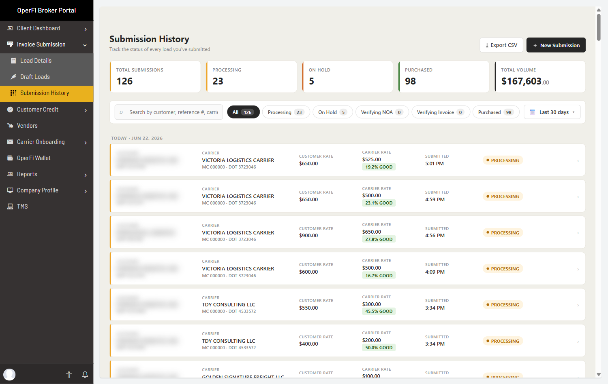
AR Aging
See what your customers owe and how old it is. Open a customer to see the loads behind the balance. Click a load to jump to its detail. Watch your aging buckets, since loads over 90 days are usually problematic, and work slow customers early.
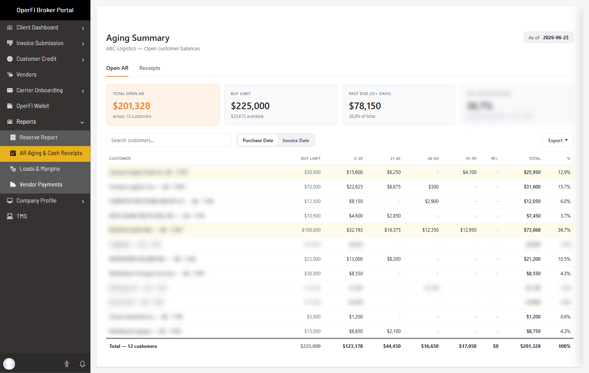
Loads & Margin
Review the revenue and margin on your loads in one place.
Vendor Payments
See what is owed to and paid to your carriers. Each carrier shows the pay terms that apply to them under your account. Search a load number or the carrier's invoice number to see whether it is pending or paid, the paid date, and the paid party. This is your best resource when a carrier or factor asks you about payment status. Use Refresh if you want the very latest; payment data updates about once a day.
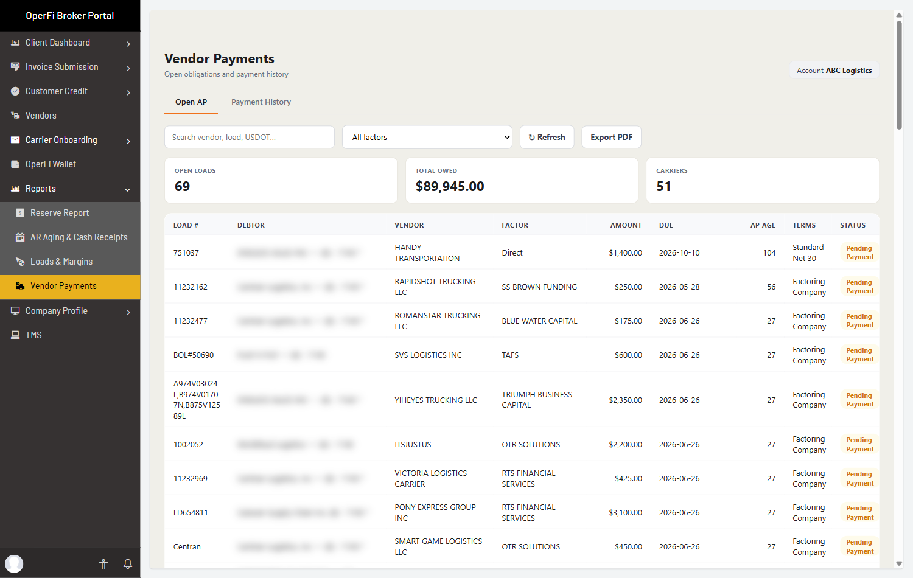
Send carriers and factors to Broker Pay
You do not have to field every "was I paid" call yourself. Send carriers and factoring companies to operfi.com/brokerpay. They enter your broker MC and the load number and get a status page showing the factoring company, paid or pending status, and the due date. OperFi's team does not give payment-status updates to carriers, that is the broker's job, and this link lets carriers self-serve.
Dashboard and Reports
The Dashboard tracks customer concentrations, aging buckets, total outstandings, open customer and vendor invoices, and 30-day purchase trends with margin over time. Reports include purchase and margin by month, fee reports, client payments, and aging summaries. Do not go "out of sight, out of mind" after submitting; use these to watch both customer payments and carrier payments.
Common questions
- A balance looks wrong or stale. Use the Refresh button. If it still looks off, contact us.
- When does my carrier get paid? It follows the pay terms shown on the carrier in Vendor Payments.
- A load I just had processed isn't showing. Our accounting and processing systems sync to the portal about once a day, so a newly processed load may not appear right away. Give it 24 hours, and confirm the load was actually submitted for funding, then contact your account executive if it still isn't showing.
7Get Paid: Your Margin, the OperFi Wallet, Fees, and Reserves
This section explains how you actually get your money and what it costs.
How your payout is calculated
Your payout is your margin: the customer bill minus carrier pay, advanced at your advance rate. You request it from the OperFi Wallet, daily or weekly, by wire or the Tank payment platform. The Wallet shows your Cash Reserve (available to release today) and your Escrow Reserve (releases as your customers pay their open invoices). To pull funds, enter an amount under Request a Reserve Release, pick your funding method, and submit. Requests before the 1:00 PM CST cutoff process the same business day for wire and Tank, next business day for ACH.
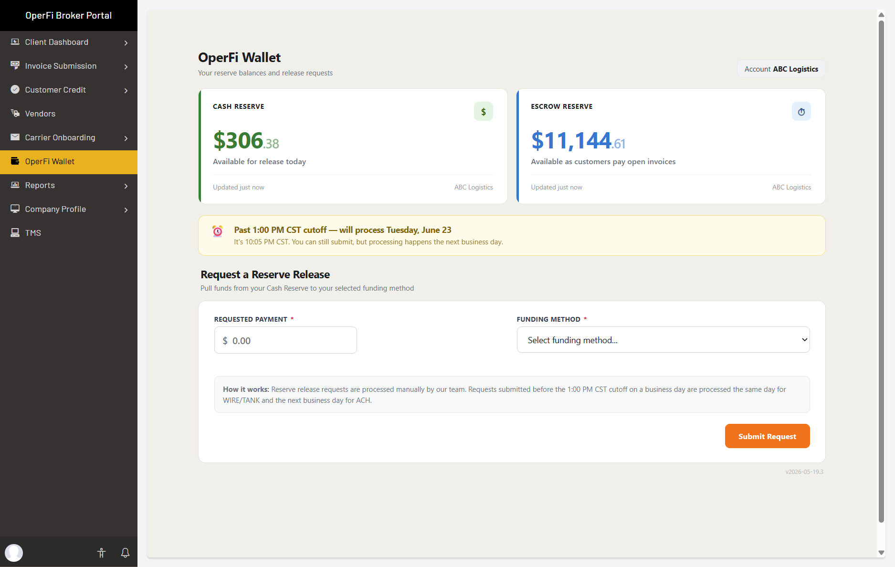
Your broker rate card
These are the standard starting rates for a new broker. The two columns are the term you choose when you sign up: a 90-day term or an annual term. The annual term carries a lower factoring fee in exchange for the longer commitment. Volume discounts also apply: if you reach $50,000 or more or $100,000 or more in monthly revenue, contact us (after your first 90 days) to discuss a rate adjustment.
| Line item | 90-Day Term | Annual Term |
|---|---|---|
| Factoring Fee | 3.50% | 3.00% |
| Escrow | 6.50% | 7.00% |
| Advance Rate | 90.00% | 90.00% |
How to read it: on a standard load we advance 90% of the receivable, hold the escrow reserve, and take the factoring fee, which together add up to the full invoice. As your volume grows, those numbers improve.
Margin and the 10% rule
Your margin on a load should be at least 10%. If a single load comes in under 10%, your other loads in the same submission should cover the shortfall so the whole submission is not below 10%. If the submission as a whole is below 10%, you fund the difference and send OperFi the remaining balance to make up your reserve escrow.
Reserves and reserve release
While a customer invoice is outstanding, your reserve is held in escrow. When the customer pays that invoice, the escrow reserve transfers into cash reserves, which you see in your OperFi Wallet, and you can request a release at any time.
Transfer fees
- Wire: $25
- ACH: $5
- Tank: $3
The one-time setup fee
There is a one-time $150 application fee. If you reach $10,000 in factored receivables and ask for it back, we reimburse it.
Quick pay and non-factored carriers
Quick pay is a two-day option, with the fee set on day one, and OperFi must net a minimum of 2%. You can charge your carrier up to 5% for quick pay, so the carrier's quick-pay fee runs 2% to 5%, of which you keep 0% to 3%. For paying a carrier on a non-factored load, OperFi charges a 2% processing fee, which you can pass to the carrier.
Note on lumpers and fuel advances: OperFi does not process lumper advances for broker clients, and fuel advances are for carriers, not brokers. If you want to extend a fuel advance to one of your own carriers, that is case by case and not every broker client qualifies. Ask us.
Recourse, the 75-day notice, and chargebacks
OperFi factoring is recourse. At 75 days you receive a notice that we have attempted collection and that the invoice will be charged back at 90 days. If it is still unpaid at day 90, it is charged back to you. When you get a 75-day notice, contact your customer to get it paid or find out the issue before the chargeback hits. Watch your aging and work slow customers early.
Remittance emails
Remittance emails show funding and fee details and how payments were applied to carriers and factoring companies. They are sent from your accounting email, and you are CC'd on each one, so you can answer a carrier who says they never got their remittance. If something looks wrong, gather the load reference and contact accounting.
Common questions
- How do I get my margin? Request it from the OperFi Wallet, daily or weekly, by wire or Tank.
- What does it cost to factor a load? See the rate card above. Standard new-broker factoring fee is 3.5%, advance 90%.
- What is the 75 Day Reserve Notice? A heads-up that an invoice is 75 days old and will be charged back at 90 days under recourse. Chase your customer now.
8Switching Your Factoring to OperFi, and Updating a Carrier's Factor
Switching your factoring to OperFi (buyout)
OperFi runs the buy-in for you:
- We complete due diligence and UCC searches.
- We contact your current factor to confirm you are eligible to leave and to request your aging.
- Once eligible, we send you the factoring agreement.
- We request the buyout agreement and final aging from your current factor.
- Both sides sign.
- We wire the buyout amount to pay off your prior factor in full.
- We request the Letter of Release.
- We finish your setup on our side.
After payoff, the old factor forwards any stray customer payments for a short window. If you ever want to leave OperFi, you can terminate with 30 days' written notice, with no minimum-volume, setup, or termination penalties.
Timeline and cost vary by your current factoring company. Every factor handles a buyout differently, so speed and cost depend on them.
Updating a carrier that changed factors
When a carrier you pay switches factoring companies, go to the NOA Management tool and upload the Letter of Release from the previous factor and the new Notice of Assignment for the new factor. We update the carrier's factor of record so payments route to the correct factoring company going forward.
9Company Profile, Trusted Contacts, and User Access
Company Profile is where you manage your company information and the people on your team who can use the portal.
Your company information
Keep your company name, address, and contact details current here. If you have a company logo, you can upload it so it appears on the documents you generate (your Rate Cons, POs, Invoices, and BOLs carry your brand, not OperFi's).
Set up separate emails so your records stay clean: an admin email for profile and account changes, an operations email for setup and onboarding confirmations and fraudulent-carrier notices, and an accounting email for remittances (you are CC'd on each). Keep a dedicated NOA email for your rate-con special instructions.
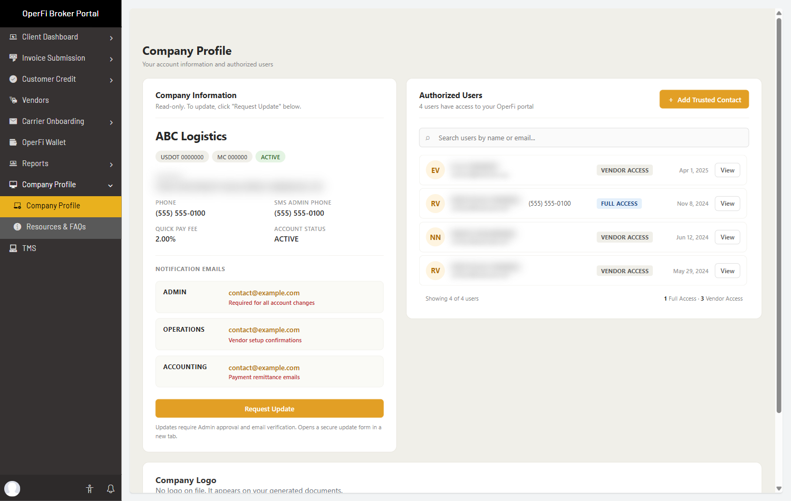
Trusted contacts and user access
The people who can log in to your portal are your trusted contacts. A trusted contact also adds a layer of security for sensitive requests and helps us verify identity. Each contact has one or more roles that decide what they can do:
- Full Access — everything, including adding and removing users. Keep this to one or two people.
- Funding Submissions — booking loads and submitting them for factoring.
- Credit Checks — running credit checks and viewing approvals.
- Vendor Access — carriers, carrier onboarding, and vendor payments.
- Account Management — editing company information and contacts.
Adding a user (Full Access only)
- In Company Profile, click Add Trusted Contact.
- Enter the person's name and email.
- Choose one or more roles. Pick Full Access to grant admin privileges across everything; that selection covers the other roles on its own.
- Save. The right access is set up and an invite goes out. Portal access can take up to 24 hours to provision.
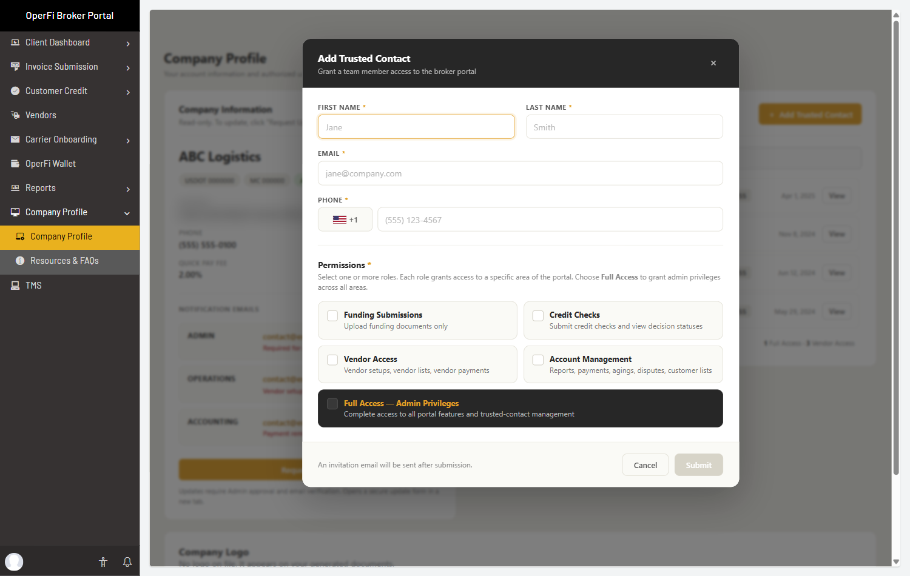
Editing or removing a user (Full Access only)
Open a contact to view them. From there you can Edit their roles or Remove them. Removing a user is a deliberate two-step confirm because it revokes their login. You cannot remove yourself, and the system will not let you remove your account's last Full Access owner.
Common questions
- I don't see Add or Remove user. Those controls are for Full Access users only. Ask your account's owner.
- A new teammate can't log in yet. Provisioning can take up to 24 hours after they are added.
- My logo looks small on documents. Upload the highest-resolution version you have. Your company name prints alongside the logo, so your documents are clearly branded either way.
10Fraud and Security: What OperFi Does and What You Should Do
Fraud prevention is a shared job. We run checks behind the scenes, and you still run your own underwriting.
What OperFi does behind the scenes
On carrier onboarding we run IP and VPN checks (catching data-center and overseas actors), VOIP phone checks, FMCSA point-of-contact-change monitoring (hijacked DOT PINs and phishing), and bank verification against submitted documents. We issue Do Not Use alerts after signup, manage and lock NOAs, and send factor notifications. On the customer credit side, we check the verifying email against the real company and review the application's IP for foreign or VPN use.
What you should do
- Verify before money or freight moves. Use trusted call-backs and escalate anything inconsistent.
- Watch for double brokering: a party taking a load and re-brokering it without permission. Red flags include BOL name mismatches, unusual emails, and last-minute changes.
- Use the free domain age verification tool in the portal. Enter a customer or shipper domain and it returns how long the domain has been registered, a quick fraud signal on new solicitations.
- Confirm operating authority and insurance, and confirm identity is consistent across documents.
Common questions
- I got a Do Not Use email about a carrier. That is an intentional alert. Do not book that carrier, and review with us first.
- A reference completed the credit app suspiciously fast. That can be a fraud signal. Flag it to us.
12Resources and Downloads
Templates, agreements, generators, and training, in one place. Links open in a new tab.
General
Customer
- Credit Application for Shipper Customer
- Customer Packet Template
- Broker-Shipper Agreement
- Broker-Shipper Agreement, 1-Page MSA
- Co-Broker Agreement
- Co-Broker Agreement, 1-Page
- Purchase Order Template
- Project Planning Evaluation Form
Operational
- Broker / Carrier Packet Setup Example
- Broker / Carrier Agreement Generator
- Rate Confirmation and BOL Generator
- BOL Generator
- PO Generator
Training and tools
- OperFi Academy: Broker Credit Training
- OperFi Academy: Freight Broker Training
- OperFi Academy: Trucking Boot Camp
- AscendTMS 90-Day Free Trial
- CarrierOK 30-Day Free Trial
- Domain Age Verification
- VOIP Phone Validator
13Glossary
- Advance rate — the percentage of a receivable we fund up front. Standard new-broker advance is 90%.
- Approved — a customer that has cleared OperFi credit and can be booked and factored.
- BOL (Bill of Lading) — the shipping document; the consignee-signed copy at delivery serves as the POD.
- Carrier pay — what you pay your carrier for the load.
- Chargeback — an unpaid invoice charged back to you under recourse, at 90 days.
- Credit Boost — a paid request to approve a customer above the free $30,000 limit ($25 up to $50,000; $50 for $100,000 or more).
- Customer rate — what you bill your customer (the shipper).
- Draft — a load you are still building, not yet committed to a carrier.
- DNU (Do Not Use) — an OperFi risk flag on a carrier. You can still book, but check with us.
- Escrow / reserve — the portion of an invoice we hold until your customer pays, then release to your Wallet.
- Factoring — OperFi advancing you funds against the load's receivable.
- Factoring fee — our fee for factoring a load. Standard new-broker fee is 3.5%.
- LOR / NOA — Letter of Release / Notice of Assignment, the documents that govern who is paid on a carrier's invoice.
- Margin — customer rate minus carrier pay, shown live as you book. Target at least 10%.
- OperFi Wallet — where your available margin and cash reserves sit, and where you request payouts.
- POD (Proof of Delivery) — the signed proof the load was delivered; required to factor.
- POD Received — the load has its POD and is waiting on the carrier's invoice.
- Quick pay — a two-day carrier payment option; OperFi nets a minimum of 2%.
- Ready to Submit — the load has its POD and the carrier's invoice and can be submitted for factoring.
- Recourse — unpaid customer invoices are charged back to you (at 90 days).
- Submitted — the load is in OperFi's funding queue and locked.
- Vendor Pay Link — a lighter carrier setup that sends the factor notification without generating a broker-carrier agreement or insurance notice.